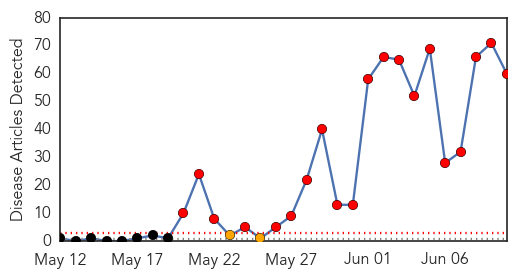
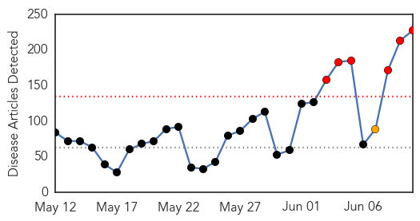

MERS
30-Day Web Trend
20 alerts, 2 warnings

30-Day Twitter Trend
14 alerts, 0 warnings

Article Locations

Article Confidences

Top Articles:
- 1.000
- Here's What You Need to Know About MERS
- 1.000
- South Korea Hit by the Largest Outbreak of the Middle East Respiratory Syndrome
- 1.000
- MERS: The virus from the desert
- 1.000
- MERS: What You Should Know
- 1.000
- WHO officials tell people, 'don't drink fatal camel urine' over MERS virus fears
- 1.000
- China's first MERS patient in stable condition, state media says; Hong Kong monitoring patient showing symptoms
- 1.000
- Death toll due to MERS rises to 9, Singapore steps up precautionary measures
- 0.999
- South Korea MERS outbreak keeping B.C. health officials vigilant
- 0.999
- MERS Virus's Ability to Jump from Animals to Humans Puzzles Scientists
- 0.999
- South Korea Hit by Most Severe MERS Outbreak Outside Saudi Arabia
- 0.999
- Viet Nam looks at 2000 passenger arrivals from South Korea
- 0.999
- South Korea MERS outbreak keeping B.C. health officials vigilant
- 0.999
- Public Health Notice: Middle East Respiratory Syndrome Coronavirus (MERS-CoV)
- 0.999
- South Korea MERS outbreak: 9 confirmed dead, 108 infected
- 0.998
- South Korea, WHO seeking cause of MERS transmissions
- 0.998
- Russia, controlli sanitari rafforzati per chi proviene dalla Corea del Sud (10 giu 2015)
- 0.998
- Outbreak Kills Six
- 0.998
- WHO MERS virus in South Korea is being monitored
- 0.998
- WHO MERS virus in South Korea is under control
- 0.998
- Mers outbreak prompts South Korea's Park to delay US visit
- 0.998
- Viet Nam monitors passenger arrivals from South Korea
- 0.998
- Outbreak in Korea follows new patterns-INSIDE Korea JoongAng Daily
- 0.997
- Joint mission to Republic of Korea on MERS-CoV begins well
- 0.997
- WHO recommends reopening S. Korean schools closed over MERS
- 0.997
- MERS Joint Mission to Republic of Korea is Underway
- 0.997
- News Scan for Jun 10, 2015
- 0.997
- Vietnam launches action plan against MERS
- 0.996
- MERS: China's first confirmed MERS patient stable, recovering slowly
- 0.995
- S. Korean MERS patient in China gradually recovers
- 0.995
- (LEAD) S. Korean MERS patient in China gradually recovers
- 0.994
- South Korea's Latest MERS Outbreak Leads to Death of 9 People, 2,800 in Quarantine and 2000 Closed Schools
- 0.994
- S. Korean MERS patient in China gradually recovers
- 0.993
- (LEAD) S. Korean MERS patient in China gradually recovers
- 0.993
- Science, Technology and Medicine News Updates From Asia
- 0.990
- Make-or-break week to stop the spread of virus-INSIDE Korea JoongAng Daily
- 0.989
- China's first MERS patient in stable condition, massive outbreak unlikely
- 0.988
- News Scan for Jun 09, 2015
- 0.986
- Top Stories
- 0.986
- China's first MERS patient recovering: officials
- 0.982
- DOH: Philippines remains free of MERS-CoV
- 0.982
- South Korean tourists are still welcome to Malaysia
- 0.975
- PH independence day event scrapped in S.Korea amid MERS scare
- 0.972
- Don't fear MERS, Korean doctors say
- 0.972
- Daily Express Newspaper Online, Sabah, Malaysia.
- 0.970
- WHO team puzzled by MERS behavior
- 0.970
- WHO team puzzled by MERS behavior – The Korea Times
- 0.965
- Beijing Utour Intl Travel Service : Mers scare
- 0.963
- Vietnam has no case of infected the MERS-CoV
- 0.955
- MOPH to strictly track health of Thai Hajj pilgrims
- 0.939
- Being prepared for Mers, Opinion News & Top Stories
Showing top 50 articles...
Top Tweets:
- 0.806
- RT: S. Korea-Gov confirms 13 new coronavirus MERS cases &2 deaths of prev known cases:total cases=108 &total deaths=9 https…
- 0.591
- AFD Blog `Hong Kong: Flu Returns As MERS Surveillance Intensifies' MERS-CoV http://t.co/43u0Qe6L9Q
Unknown
30-Day Web Trend
6 alerts, 1 warnings

30-Day Twitter Trend
4 alerts, 1 warnings

Article Locations

Article Confidences

Top Articles:
- 1.000
- MERS infections exceed 100 in Korea
- 0.999
- MERS May Be Waning, But Steer Clear of Camels
- 0.999
- Experts puzzled by virus jump from animals to humans in the Middle East
- 0.999
- Park postpones US trip as South Korea MERS toll hits nine
- 0.999
- The World On Arirang
- 0.999
- iafrica.com S. Korea MERS death toll hits nine
- 0.999
- South Korea MERS outbreak: 7 dead; 2,500 quarantined
- 0.999
- 9 dead in South Korea MERS outbreak: President cancels US visit
- 0.999
- The World On Arirang
- 0.998
- Park postpones US trip as South Korea MERS death toll hits nine
- 0.998
- MERS Is No Reason to Close Schools, WHO Tells S. Korea
- 0.998
- South Korea MERS outbreak: Officials brace for 'most important p
- 0.998
- South Korea MERS death toll hits nine
- 0.998
- South Korea MERS outbreak: Officials brace for 'most important period'
- 0.997
- South Korea to check pneumonia patients for MERS virus
- 0.997
- MERS claims 9th victim; 13 more infected
- 0.997
- South Korea reports 13 new MERS cases, two more deaths
- 0.997
- (4th LD) S. Korea reports two more MERS deaths, 13 new cases
- 0.996
- MERS outbreak delays S Korean President Park Geun-hye’s US trip
- 0.996
- S. Korean president delays U.S. visit after MERS infections top 100 in 3 weeks
- 0.996
- WHO asks countries to remain alert on MERS
- 0.995
- Why South Korea's MERS Outbreak Might Not Be as Bad as SARS
- 0.995
- WHO Urges for the Reopening of 2,700 Schools in South Korea
- 0.995
- Woman isolated in Hong Kong hospital over MERS
- 0.994
- Woman isolated in Hong Kong hospital over MERS - Regional
- 0.994
- Woman isolated in Hong Kong hospital over MERS
- 0.994
- MERS will be stopped soon
- 0.993
- Singapore expands Mers checks on air travellers, Others news, Health News, AsiaOne YourHealth
- 0.993
- Woman isolated in Hong Kong hospital over suspected Mers, East Asia News & Top Stories
- 0.993
- Woman isolated in Hong Kong hospital over MERS
- 0.992
- Woman isolated in HK hospital over MERS – BorneoPost Online
- 0.992
- President Park Geun-hye delays Sunday's visit to US
- 0.991
- (MERS virus) South Korea struggles to contain spread, 13 more infected
- 0.990
- WHO urges S.Korea to reopen schools shut over MERS
- 0.989
- S. Korea's Park postpones US trip, MERS deaths increase
- 0.988
- Suspected MERS in HK raises fears of regional spread
- 0.988
- Risk of Mers cases in China has ‘increased significantly’, says government
- 0.988
- Beijing warns of MERS risk
- 0.986
- Police Charge 8 People For Spreading False Rumors About Deadly Disease
- 0.986
- Hong Kong suspects two MERS cases
- 0.986
- S. Korean businesses step up precautionary measures against MERS
- 0.985
- Middle East respiratory syndrome cases broken down by country
- 0.985
- One of four suspected Mers cases picked up at Hong Kong health centres tests negative
- 0.985
- New deaths as S Korea sets up #MERS clinics countrywide
- 0.985
- S. Korean authorities’ instructions on MERS don’t match with actual situation
- 0.983
- Severe tuberculosis case sparks hunt for possible victims
- 0.983
- Nine Dead, 108 Infected As Authorities Struggle to Contain Virus
- 0.980
- Park postpones US trip as MERS death toll hits nine – BorneoPost Online
- 0.980
- 77-year-old overcomes MERS
- 0.979
- S. Korean President Delays U.S. Visit amid MERS Crisis
Showing top 50 articles...
Top Tweets:
- 0.592
- RT: Hufof MERS outbreak by the numbers: 30 cases 13 deaths dating to April 20. 4 HCWs. 17 with confirmed links rest unde…
- 0.572
- Hufof MERS outbreak by the numbers: 30 cases 13 deaths dating to April 20. 4 HCWs. 17 with confirmed links rest under investigation. 2/2
- 0.512
- Recent MERS cases emphasize importance of good infection control in health care system. Read more via: http://t.co/XLsExlpMps